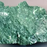

Mineral Grimoire
 Ruby
Ruby
Ruby is a chromium-rich variety of corundum in the Hexagonal crystal system with a Mohs hardness of 9, making it the queen of the gemstone world and the birthstone of July.
Appearance
Ruby displays brilliant red hues ranging from pinkish-red to deep blood-red. Transparent when polished and opaque in raw form, specimens appear as small faceted crystals or larger cloudy pieces. Traditionally worn by royalty, rubies can be rarer and more valuable than diamonds. Less than 5 percent of all rubies qualify as star rubies, displaying asterism when hexagonal formations within the crystal develop at a precise angle, revealing an internal six-pointed star structure. Uncut Ruby is readily available, though polished gemstone is expensive.
Colors
Red, pinkish-red, deep crimson, pigeon's blood red
Origin
Afghanistan, Australia, Cambodia, France, Madagascar, Myanmar, New Zealand, Pakistan, Tanzania, United States (Indiana, New Jersey)
Magickal Properties
Ruby is a stone of love, passion, and purpose with a fiery intensity that has been revered across civilizations for millennia. Egyptian pharaohs believed it granted immediate and eternal protection, prosperity, and peace. Ancient jewelers set rubies on the inside of rings to ensure safe passage through life, and mothers wore ruby bands to protect their babies during pregnancy. Ancient Indians believed rubies reunited loved ones and preserved the memory of the beloved in the heart during separation. In Hindu tradition, offering a ruby to Krishna was said to grant eternal life as an emperor.
For beginners, Ruby heals both emotional and physical matters of the heart. It helps the keeper find motivation and recommit to goals with enthusiasm and confidence. It reveals the keeper's royal nature and strengthens the connection to deepest desires. It energizes and balances, promotes positive dreams and clear visualization, and stimulates the pineal gland. It is a stone of abundance that aids in retaining wealth and passion. It brings about a courageous state of mind with heightened awareness and sharp concentration, and overcomes exhaustion and lethargy.
According to Vedic astrology, Ruby is the gemstone of the sun, the symbol of creation, a giver of vital energy, life force, and the soul of the cosmic body. Advanced practitioners work with its fiery intensity to find passion in matters of the heart, attract love, and overcome fear and heartache from past trauma. Ruby brings up anger and negative energy for transmutation while clearing anything harmful from the keeper's path. It serves as a powerful shield against psychic attack and vampirism of heart energy. Star rubies are considered manifestations of higher-self or spirit guidance, leading the keeper toward the highest spiritual evolution.
Chakra Work
Ruby activates the Heart Chakra with the intensity of physical passion, stirring the sensual energies of the heart space. It creates a direct connection between the Root and Heart Chakras, grounding passionate energy into the physical body. In Reiki practice, rubies represent life force and enhance the flow of prana or chi during healing sessions. In the Navaratna ("nine stones") of Hindu tradition, Ruby represents the sun, bringing strength, passion, and purpose. It is best worn as the center stone of a ring on the ring finger of the right hand to represent the sun's dominant position. Place over the heart for emotional healing, on the finger for daily wear, or at the ankle for grounding energy.
Meditation
Ruby promotes positive dreams, clear visualization, and stimulates the pineal gland during meditative practice. Gem-quality Ruby activates the pineal gland and brings intuitive guidance, aligning the chakras and removing blockages to clear energy flow. Its gentle red ray carries particular potency for matters of the heart.
Spellworking
The ruby fashioned into a cabochon of a specific shape was known as "carbuncle" centuries ago. There is no stone of this name, though many books list carbuncle as a separate stone—another example of the strangely convoluted history of gemstones!
This beautiful stone was considered the most perfect offering to Buddha in China and Krishna in India.
A widely held belief: Dreaming of rubies indicates coming success in business or money matters. If dreamt of by a gardener or farmer, the ruby denotes a good harvest.
This stone is one of many that is thought to grow dark when danger or negativity approaches its owner or when illness threatens. Whether this was psychically viewed, symbolic, or an actual change in color is undetermined, but was probably a psychic phenomenon. In this sense the ruby can be used as a tool of scrying, as can most of the transparent stones.
Wealth
Rubies are truly precious stones. In thirteenth-century magic, rubies were well established as wealth-increasing stones. They were especially effective if engraved with the image of a dragon or snake before using.
Ancient magic from India states that the possession of rubies helps their owner to accumulate other precious gems, perhaps because of the stone's wealth-inducing qualities.
Protection
Ruby is a powerful helper for shielding the wearer against psychic attacks and jinxes. However, ruby's energetic nature means it should be worn only during times of upheaval rather than as daily armor—especially for those highly sensitive to external stimuli.
Worn, the ruby was thought to convey invulnerability, or protection against all foes, wicked spirits, negativity, plague, fascination (magical manipulation), and famine. It was also a special mascot of soldiers, guarding against wounds in battle. Basically, the ruby strengthens the body's own psychic defense system when worn.
Rubies are fantastic armor against psychic vampirism—when your energy is being leached without consent. The stone's fiery vitality replenishes what's being drained while simultaneously creating a barrier against further extraction.
The ruby in the home guards it against storms and negativity, especially if first touched to the four outside corners of the house. Similarly, touching trees or the boundaries of a garden magically protects them from lightning and the effects of violent storms.
Power and Energy
Ruled by Mars, the ruby is worn during magical rituals to increase the energies available to the magician or it is placed on the altar beside a red candle to lend energy to you when you're feeling depleted or drained.
In a similar line of magical influence, wearing a ruby is said to increase the body's warmth.
Fever Caution
Because rubies are believed to have a warming effect on the body, it is recommended that ruby jewelry be removed from those suffering from fever.
Joy and Willpower
Jewelry set with rubies is worn to banish sadness and negative thought patterns. Such jewelry also produces joy, strengthens willpower and confidence, and also dispels fear.
Anti-Nightmare
Placed beneath the pillow or worn to bed, it assures restful sleep, undisturbed by nightmares.
Childbirth
Worn anywhere on the body, ruby is said to help ease the pains of labor.
Star Rubies
Star rubies, those rare stones with a naturally occurring six-pointed star, are thought to be particularly potent in protective and other forms of magick since a spirit was thought to dwell within it. Star rubies can also be used as divinatory tools by gazing at the crossed lines of light.
Folklore
The word ruby is bound up with red, coming from the Latin rubens, which carries the same meaning. In India it was called ratnaraj, the Lord of Precious Stones, and Hindus guarded their finest stones, known as Brahmans, from contact with lesser rubies for fear of contamination. The former kings of Burma held the title Lords of the Rubies, another mark of the stone's link with royalty. Second only to the diamond in hardness, the ruby was grouped in Pliny the Elder's day with other red stones as one of the carbunculi, a class that also held garnets and spinels.
Its red color shaped its meaning. Seen as the hue of vitality, of the life-giving forces, and of passion, the ruby was thought so powerful that it would bring water to a boil if thrown in. Its light was said to shine through any cloth wrapped around it, so that it could never be hidden. This idea that precious stones give off light rather than merely reflect it appears again and again in old writings, and a ruby was said to sit on the roof of the Temple of the Holy Grail to guide the Grail knights toward it in the dark, lending the stone spiritual weight alongside its worldly value. In Hindu legend the ruby lights the underworld of Kantha, and an old tale holds that it begins as a clear stone and ripens in the ground over hundreds, even thousands, of years.
Worn so that it touched the skin, the ruby was believed to guard the wearer from ill health, especially when placed on the left side of the body, since its color tied it at once to the heart and the circulatory system. Though a stone of passion, it also stood for conscious control of the emotions, believed to restrain lust and clear the mind. Like other red stones it was thought to staunch the flow of blood, which led to the belief that owning one made a warrior proof against weapons of steel, including the gun, though to work fully the stone had to be set beneath the skin.
Correspondences
Love, Passion, Purpose, Life Force, Sensuality, Ancestors, Pregnancy, Reiki, Enthusiasm, Healing, Protection, Prosperity, Motivation, Confidence, Desire, Strength, Courage, Vitality, Sexuality, Fertility, Manifestation, Fear, Trauma
Partners Well With
Blue Kyanite,  Carnelian,
Carnelian,  Emerald,
Emerald,  Garnet,
Garnet,  Gold, Morganite,
Gold, Morganite,  Moss Agate,
Moss Agate,  Rose Quartz,
Rose Quartz,  Zoisite
Zoisite
Care
Ruby is exceptionally durable at Mohs 9, safe for water cleansing and sun exposure. Cleanse under cool running water or place on a selenite plate. Charge under sunlight to amplify its solar resonance, or under moonlight for a gentler recharge. Its hardness makes it suitable for daily wear in jewelry. Note that Ruby may overstimulate sensitive or irritable individuals; in such cases, limit exposure or pair with a calming stone.
Magickal Message
"Don't be afraid to live with intensity. Your nature is inherently royal, and you deserve to live a life filled with passion and love."
Dark Magick Applications
Ruby functions as a clarifier and purifier of intent in benevolent magick, but this same quality makes it equally effective for aggressive or malevolent workings. It zeroes in on the target, concentrating and directing the caster's intention with precision.
The Nine Gems
In a traditional Indian belief, each of the nine planets is paired with its own precious gem, the set known together as the navaratna. The ruby is the gem of the  Sun. The full set assigns the pearl to the Moon, the ruby to the Sun, topaz or yellow sapphire to Jupiter, the diamond to Venus, the emerald to Mercury, red coral to Mars, blue sapphire to Saturn, hessonite garnet to Rahu, and cat's eye to Ketu. Rahu and Ketu are the northern and southern lunar points that come into play during eclipses, which is why they are also called the eclipse planets.
Sun. The full set assigns the pearl to the Moon, the ruby to the Sun, topaz or yellow sapphire to Jupiter, the diamond to Venus, the emerald to Mercury, red coral to Mars, blue sapphire to Saturn, hessonite garnet to Rahu, and cat's eye to Ketu. Rahu and Ketu are the northern and southern lunar points that come into play during eclipses, which is why they are also called the eclipse planets.